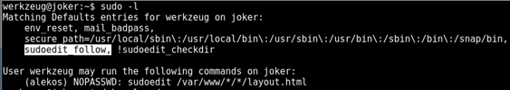

Squid http-proxy is identified
Configure browser to use said proxy (foxyproxy or other)
UDP 69 tftp
UDP 5355 llmnr
/etc/squid/squid.conf
grep . #only show lines with content
When using a squid or proxy, try 127.0.0.1 in browser just because you may be served something you shouldn't be served potential SSRF.
In Burp, you can add an "upsteam proxy" in User Options > Connections > Upstream Proxy Servers and configure proxy, port, auth, etc
python
import os
os.popen("").read() #can honestly use anything here, even subprocess[("",shell=True)] and grab stdin/out/err
/bin -h 2>&1 #if you need to direct stderr to stdout. Help apparently goes to stderr
base64 -w 0 #change wrapping to 0, otherwise base64 will wrap multiple lines and makes it harder to work with
nc -u #change to a UDP connection
nc -u -lvvnp #listen for UDP connection
Also scrutinize the flags being used with sudo/sudoedit when you do a sudo -l

Wildcard injection, see pages in linux priv esc
if you see
tar cf /home/FILE *
and you can force the dir that tar is in, you can get a backup of everything wherever tar lands
In the case of joker, the command was:
cd /home/alekos/development;
tar cf /home/alekos/backup/$FILENAME *;
By deleting the /home/alekos/development folder, the cd could not happen and tar archived everything in it's current directory: /root/